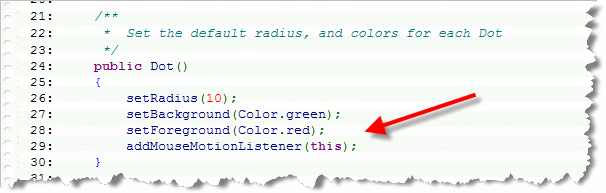
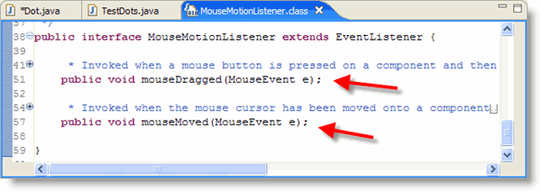
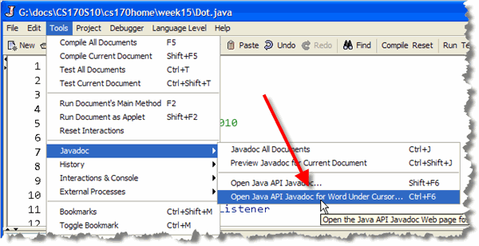
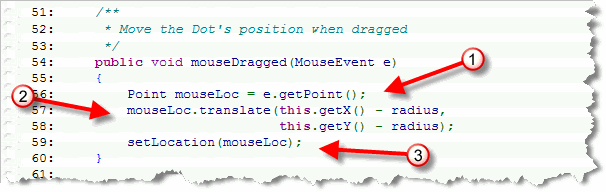
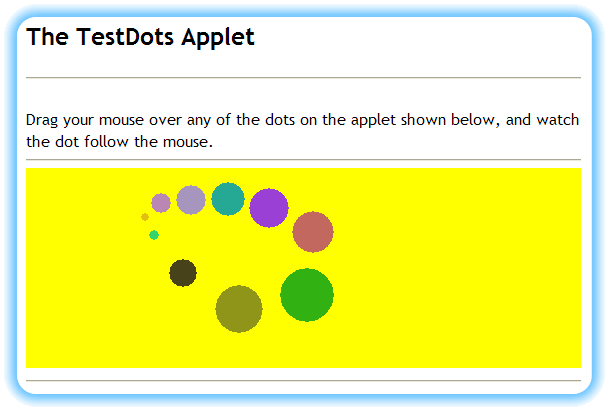
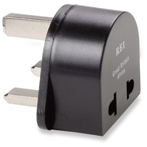
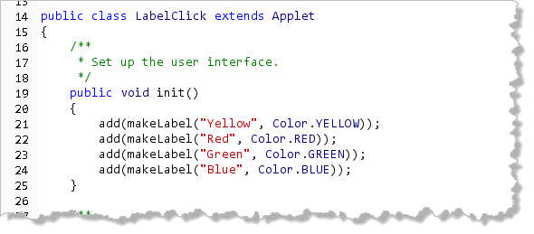
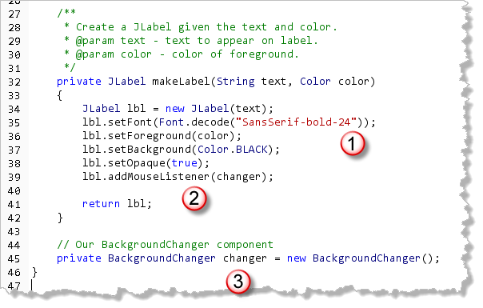
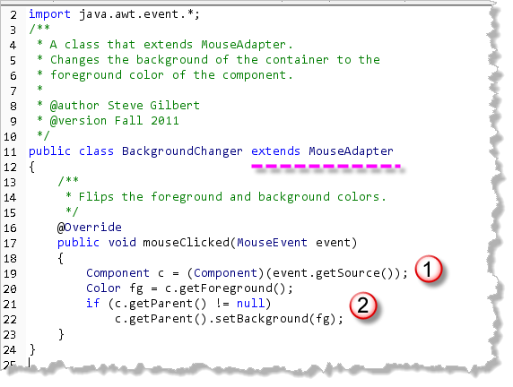

Earlier in
the semester,
you learned to write code to perform an action when a user clicked
a button on your ACM programs. To do that, you invoked
the magic incantation addActionListener()s
at the end of your init() method, and
then wrote an actionPerformed() method
which was automatically notified any time one of your
buttons was clicked.
Now that you've been formally introduced to interfaces, let's take a closer look at what all that "mumbo jumbo" means. We'll start by a little about Java's AWT event hierarchy. I won't cover each of the classes in detail here; instead I'll try to give you a high-level, practical overview.
Events
While messages allow you to communicate with your objects, they don't allow your objects to "talk back." Events change that.
Events are external occurrences that let you know something has
happened in your program. Usually an event is triggered by a
user interacting with your program. When the user clicks on a
button, for instance, events allow the Button object
to notify you that this has occurred.
In the Java's event model, objects have to subscribe to a
component's events. For instance, if I want my applet to do
something when a particular button is pressed, I have to explicitly
tell that button to "Notify me when something happens."
In ACM programs, the Program class does this for
you when you call addActionListeners().
This is just like subscribing to a magazine or an RSS feed on the Web. If I don't ask the button to notify me, it will keep the information to itself. Here are the basic features of this scheme:
- Any component can generate events.
- Different components generate different kinds of events.
- Any class (not just components) can receive, or respond to, an event
- Responding classes must:
- implement the correct interface
- register or subscribe to a components events
Let's see how this works by having our Dot objects,
from the last chapter, "move themselves" when the user drags them
with the mouse.
You'll find a copy of Dot.java and TestDots.java
in this chapter's code folder. Follow along as you read.
Step 1: Preparation
There are two things we have to change to Dot.java before we can use Java's events.
First, we have to begin by importing
the package that contains the event code: java.awt.event.
Once we've done that, we can use any of the classes and interfaces
in the awt.event package.
 Second, we have to add a new phrase,
Second, we have to add a new phrase, implements MouseMotionListener,
to the class header.
When we're done, the top of Dot.java should look like
the screenshot shown here.
As soon as you add these statements and then try to compile, DrJava "sends up a yellow flag", telling you that you haven't implemented a particular abstract method. We'll fix that error in a minute.
Step 2: Subscribing
You subscribe to a particular event by telling the object that
generates events (in this case, our Dot objects),
that you want it to add you to its "list of subscribers." This
list of subscribers is called a "listener list", and
there's a special method to sign up for each of the events
that a component can generate.
The method to sign up for events that occur when the mouse
is moved or dragged over a component is called
addMouseMotionListener(). Since we're going to have our
Dot objects "move themselves", we'll place this code
in the constructor:

When you subscribe to an event, you also have to pass along an argument telling the component who to notify when the event occurs. Again, this is like subscribing to a magazine; you can have the magazines sent to yourself, or you can have them sent to your in-laws as a gift. In our case, instead of a magazine subscription, our Dot
object will deliver a MouseEvent object whenever it notifies
its listener. We want our Dot object to send its notification
back to itself, and so we'll pass this as the
argument to addMouseMotionListener(). Passing
this as an argument tells the class to
Deliver the MouseEvent object to me.
Step 3: Responding to Events
Now that our Dot is prepared to notify you, (or itself,
actually), whenever a MouseEvent occurs in its
neighborhood, you need to be prepared to respond. You respond
to events by writing methods.
What methods should you write? Different "event packages" require
you to write different methods. If you were to look at the
source code for the MouseMotionListener
class itself you'd see:

Notice that the definition of the interface includes two abstract methods:mouseMoved() and mouseDragged(). By
adding the line implements MouseMotionListener to our
class header, we promised to define these two methods in our
class. Since we haven't yet done so, DrJava displays an error when
we try to compile.
Finding and looking up the source code for an interface is
not the easiest thing to do. It's far easier to put your cursor
on the word MouseMotionListener in the class header,
and then use the Javadoc->Look up word under cursor
command on DrJava's Tools menu:

Just add both of these methods to Dot.java and your code will compile. Unfortunately, when you go to run the applet, nothing happens!
Nothing Happens????
That's right! We haven't actually put any code into
the mouseMoved() or mouseDragged()
methods, but, when the user moves the mouse over Dots
on the applet, the mouseMoved() method is called.
Similarly, if the user drags the mouse (moving and holding
down the primary mouse button) over the applet, it
calls the mouseDragged() method.
What happens if the user clicks the mouse while
over your applet? Nothing. The applet is "aware" that the
event has occurred, but because no one has subscribed to the
MouseListener (different than
MouseMotionListener), it keeps the information to
itself.
Using the MouseEvent
When a Dot object calls the mouseMoved() or
MouseDragged() method, it passes along a reference
to the MouseEvent object that triggered all the
fuss. You can send messages to the MouseEvent object,
(here I've named it e, for event), to find
out what it's up to.
Three of the MouseEvent messages you might find most
useful are getX(), getY(), and
getPoint(), which return the horizontal and
vertical mouse coordinates (starting at 0,0 in the upper-left corner
of the component generating the event, and increasing right and down)
when the MouseEvent occurred.
We can use this information to reposition the Dot object
so that its center is positioned at the location of the mouse
drag event, like this:

Here's how the code works:- On line 56 we retrieve the location of the mouse using
the
getPoint()method, and store it in a localPointvariable namedmouseLoc. - The location of the mouse returned by
getPoint()is relative to theDotobject itself, not to the applet. To compare the coordinates to the actual center of the object, we need to "add in" the current location of theDotobject itself. We do this on lines 57 and 58 by using thetranslate()method, (from thePointclass), and thegetX()andgetY()methods from theDotclass itself. As part of our calculation, we subtract theradiusvalues, to get the center of theDot. - Finally, once the new point has been calculated, we
use the inherited
setLocation()method to move the center of the dot to the location of the mouse pointer.
You can run the applet by clicking the hyperlink in this sentence. Here's the applet after I've used the mouse to rearrange some of the dots:

Try It Yourself
Make these changes to Dot.java and then run TestDots and arrange the dots on the program in a nice pattern.
Event Adapters
Notice that when you implemented the
MouseMotionListener interface, you only
responded to the mouseDragged() event in the
Dot class.

However, even though you didn't do anything when the mouse was moved without dragging, implementing theMouseMotionListener interface required you to write two methods, but one
of those methods, (mouseMoved()), didn't do anything;
nevertheless, you still had to write the empty method; otherwise
your code would not compile.
For many of the other event-listener classes, the situation is even worse.
- For
KeyListeneryou have to write three methods - For
MouseListeneryou have to write five - For
WindowListeneryou have to write seven
And, in many cases, such as WindowListener, all of
those methods will be empty, "dummy" methods, which seems kind
of a waste.
Instead of writing all seven methods, why not simply create a superclass that has dummy methods for all seven? Then, instead of writing out the same dummy methods over and over, you can just create a subclass, and override only the methods you want.
That's a really good idea. So good, in fact, that the designers of Java have already done this with the event adapter classes. An adapter class is simply a class which implements a specific event interface and then provides dummy methods for each of the required methods.
What Adapters are Available?
Java provides seven different adapter classes—one for each of the event interfaces that contain multiple methods.
No adapter classes are provided for interfaces such
as ItemListener or ActionListener,
which contain only a single method, because there would be no
advantage to using the adapter class over the interface.

The seven adapter classes provided by Java include:
ComponentAdapterContainerAdapterFocusAdapterKeyAdapterMouseAdapterMouseMotionAdapterWindowAdapter
Using Adapters
To use an adapter class you follow these steps:
- Create an class that extends one of the existing adapter classes.
- Override the methods of interest in your inner class.
- Create an object of your inner class and send event notifications to the new object.
Normally, you'll use event adapters with inner classes, not external classes as I'm doing in this example. You'll see how to create an inner class in the next section.
Here's what that looks like for the MouseAdapter
class:

A MouseAdapter Example
Let's look at a simple applet that uses MouseAdapter
to change the background of the applet. The program,
LabelClick.java, which you can find in this chapter's
code folder, contains four JLabel objects,
captioned "Red", "Green", "Blue", and "Yellow", as shown here

The init() Method
The applet itself doesn't implement any interface.
Instead the init() method calls a non-static factory
method named makeLabel(), and adds the JLabel
objects that the method creates to the surface of the applet:

The makeLabel() Factory Method
The factory method makeLabel() takes two
parameters: the text that should appear on each label and the
color to use for the text. The method uses the color and the
text to initialize a JLabel (1), setting the background
and font along the way.

Before the label is returned, though, theaddMouseListener()
method is called (2), and it is passed a variable named changer
which is an instance variable of the type BackgroundChanger.
You can see the instance variable definition marked at (3).
The BackgroundChanger
The BackgroundChanger class is defined as a class
that extends MouseAdapter. Inside the class, only
the mouseClicked() method is overridden:

The method retrieves the foreground color from the component that was clicked and uses it to set the background color of the component that contains the clicked component. In this case, that means that the applet's background color is changed as each label is clicked.
Events and Interfaces Summary
- Events are external occurrence that your program can respond to. Any component can generate or "fire" an event. Different types of components fire different events.
- Any class can respond to events. To do so, the class must implement the correct interface. Then, an instance of the class must register with the individual component firing the event.
- To respond to
MouseMotionevents, you must write a class thatimplements MouseMotionListener. Your class must provide implementations for both methods defined in the interface. - To activate mouse motion listening you must create an
instance of your listener class and subscribe to a particular
component's event notifications by calling it's
addMouseMotionListener()method, passing your listener instance as an argument. - Instead of implementing all of the methods in an interface, leaving the undesired events as stubs, you may extend an event adapter class and then just override the methods that you desire. To use your new adapter class, create an instance and pass it to one of the event registration functions.
- The Java libraries provide event adapters for all of the multi-method event-handling interfaces.